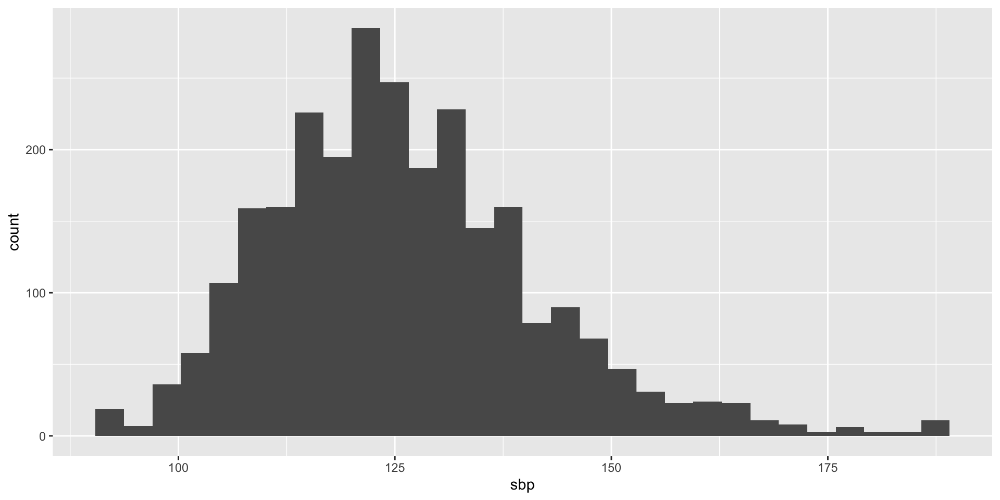
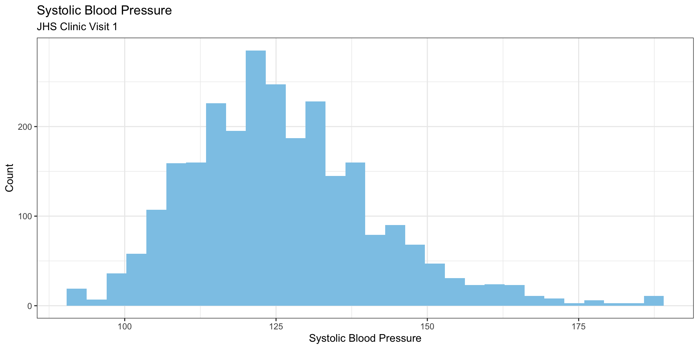

Review of R: Data Management, Summarization, and Visualization
STA6257: Advanced Statistical Modeling
Dr. Seals
R, RStudio, and Quarto
This course will be using R and RStudio to create documents using Quarto.
You will create .qmd files that will render into .html files (like this one!).
If you have used R Markdown before, this will be a smooth transition for you.
Your options for computing:
Install R and RStudio on your personal computer (recommended).
Use the RStudio Server, generously maintained by UWF HMCSE.
R, RStudio, and Quarto

R, RStudio, and Quarto

Tidy Data
- We will follow the philosophy of tidy data, as defined by Hadley Wickham.

Tidy Data
- Sometimes we need long data2:

- Sometimes we need wide data2:

The tidyverse
We will use the
tidyverseas much as possible.The
tidyversepackage is a collection of packages.The tidyverse blog regularly posts about new packages and functionality.
There is an official tidyverse style guide.
- This will teach you good coding practices.
Do students have to use
tidyverse?- Yes, when requested for an assignment.
Installing and Calling Packages
- Before calling a package into R, we must first install it.
Note that you only install a package once and then you remove the
install.packages()call.Once a package is installed, we will call it in so that we can use the functions from that package.
We will call all packages needed for a script or document at the top of the document.
There is a point-and-click interface in RStudio for packages…
Importing Data
Data is stored in a variety of file formats and can be imported into R.
- .csv \to
read_csv() - .xlsx (Excel) \to
read_excel() - .sas7bdat (SAS) \to
read_sas() - .sav (SPSS) \to
read_sav() - .dta (Stata) \to
read_dta() - Google Sheet \to
read_sheet()
- .csv \to
Importing Data

Importing Data

Warning!
It is tempting to use point-and-click to do things.
Remember that we want reproducible research and documents.
While we may use the Import Data wizard to import our data, it is imperative that we copy the code into our R script (or Quarto document).
It is unlikely that you will complete your work in one session. This makes it easier to “pick up” where you left off!
In the future, you may have to tweak and rerun an analysis – it’s so much easier if you can just run the code to call in the data. :)
Importing Data
Let’s import data from the Jackson Heart Study, a NIH-funded study.
- The data has been given to us in a .sas7bdat file, so we will use the
read_sas()function.
- The data has been given to us in a .sas7bdat file, so we will use the
Importing Data

Importing Data

Importing Data

Importing Data
Some things I’ve learned in my time as a Card Carrying Statistician:
Data can be given to us in an awful format.
Even if data is in a “nice” format (i.e., it looks “fine” when I open the .csv file), it may not import properly.
It is very important to literally look at the dataset once we’ve imported it – we want to make sure it imported correctly.
Sometimes I have to do some “preliminary cleaning” prior to importing… but I try to keep this at a minimum, for reproducibility purposes.
We aren’t in Happy Textbook World anymore.
Pipe Operator
A huge advantage of doing data management with
tidyverseis the pipe operator,%>%.This “feeds” our dataset into the next function.
For example,
Pipe Operator
We can use the pipe more than once, depending on what needs to be done.
For example,
Keeping Specific Columns
We can limit our dataset by specifying the columns we want to keep using
select().For example,
Removing Specific Columns
We can also use
select()to remove specific columns.For example,
Filtering the Data
We can use
filter()to filter the dataset.For example,
Filtering the Data
We can use multiple logical statements in
filter()For example,
Creating New Variables
We will use
mutate()to create new variables.- We can overwrite variables, but I strongly advise against this.
For example,
Merging Datasets
Sometimes we need to merge datasets together.
- Data is often contained in different places.
As an example, the JHS data was originally collected by individual form.
- The Coordinating Center Data Core created the analysis datasets after merging together the individual form datasets.
To merge, we use one of the join functions:
left_join(A, B, by = "variable")right_join(A, B, by = "variable")inner_join(A, B, by = "variable")full_join(A, B, by = "variable")
Merging Datasets
- Suppose we want to merge the JHS data from visits 1 and 2.
data_v1 <- read_sas("/Volumes/GoogleDrive/My Drive/STA6257/datasets/analysis1.sas7bdat") %>% select(subjid, HTN)
data_v2 <- read_sas("/Volumes/GoogleDrive/My Drive/STA6257/datasets/analysis2.sas7bdat") %>% select(subjid, HTN)
merged <- full_join(data_v1, data_v2, by = "subjid")
head(merged, n=4)Oh no! Both datasets have the same variable names.
- R takes care of this for us with the .x and .y… but we are going to do things properly.
Merging Datasets
- Let’s use the
rename()function.
data_v1 <- data_v1 %>% rename(HTN_v1 = HTN)
data_v2 <- data_v2 %>% rename(HTN_v2 = HTN)
merged <- full_join(data_v1, data_v2, by = "subjid")
head(merged, n=4)- Now our variables have meaningful names :)
Data Visualization
ggplot2is an incredibly powerful graphing package.Constructing graphs with
ggplot2is what got me hooked on REvery element of the graph is customizable.
When constructing graphs, we should ask ourselves who the consumer is.
If making a graph “for me” I do not worry too much about appearances.
If making a graph for a collaborator, I create a “rough draft” for discussion purposes.
If making a graph for a presentation or manuscript, I am very particular about its appearance.
Graphs to be viewed in a professional setting should be clean and easy to interpret.
Data Visualization
- Let’s create a histogram using
geom_histogram(),
Data Visualization
Data Visualization
- Let’s customize our graph,
Data Visualization
Data Visualization
- All of the
geom_x()are “layers” on the graph.
Data Visualization
- All of the
geom_x()are “layers” on the graph.
Data Visualization
- All of the
geom_x()are “layers” on the graph.
Reminders / Disclaimers
I am not an expert in R / programming in general!
I have been using R as my primary analysis software since 2020 or so.
I am a statistician first, programmer second.
There may be better ways to code things – please let me know if you have more efficient code!
The code I present to you is perhaps not the most elegant, but it works. :)
We are all learning together – remember that your professors are lifelong learners.
Do not be afraid to research a code solution to your problem.
- I very often search for what I’m looking for and add “tidyverse” or “tidy data” to see if there’s a solution in the
tidyverse.
- I very often search for what I’m looking for and add “tidyverse” or “tidy data” to see if there’s a solution in the
Reminders / Disclaimers
It is impossible for me to teach you all programming that you will need over your career.
Please become comfortable with researching a solution to your problem.
While I have a PhD, I do not know everything there is to know about either statistics or statistical programming.
Despite having used SAS for a decade, I still had to research the procedure syntax when I was fresh out of graduate school. (Do not be afraid to research!)
Our training has prepared us to independently research a solution, sift through results to find reliable and appropriate solutions, and figure out how to apply the solution to the problem at hand.
Be confident in your knowledge.